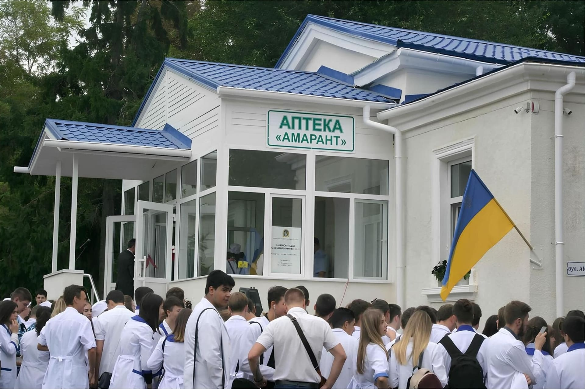

2012 рік. Спільна фотографія колективу Міжнародного гуманітарного університету

2017 рік. Відкриття на базі Міжнародного гуманітарного університету сучасного
Стомотологічного центру за адресою: вул. Академічна, 30
2018 рік. Укладення меморандуму про співробітництво між Міжнародним
гуманітарним університетом та Медичним домом «ODREX»

2020 рік. Відкриття на базі Центру протидії COVID-19 Міжнародного гуманітарного
університету першої в Україні палати інтенсивної терапії